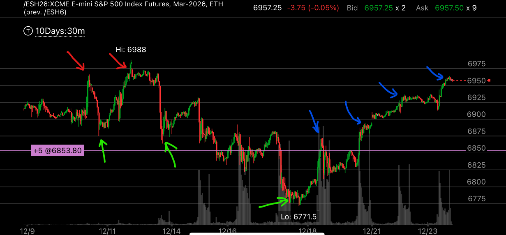

加速下跌出现底部后，典型的上涨走势
- 在加速下跌，出现底部后，它第一次上涨，通常回大涨，然后拉回一部分，拉回的是一个阻力点，这样在时间上可以更久。
- 它随后上涨的幅度，也是根据前面下跌的几个关键点来的。

图示:
- 观察几个蓝色箭头，都是和前面下跌的时候的关键点相对应的。
- 第一个蓝色箭头，上涨后，低于关键点，拉回。第二个关键点，正好是前面下跌的最后一个关键点。

图示:
- 大盘在前面出现了加速下跌底部。
- 观察粉色箭头，它是第一天上涨。它涨幅很大，但是收盘的时候拉回。
- 随后几天，它就开始连续上涨，一点回调都没有。